Chapter 8, Frequently Asked Questions
- Chapter 8, Frequently Asked Questions
- 1、Enumeration Failure
- 2、Printer Cannot Be Enumerated When Connected via Network Port
- 3、Failed to Connect to the Serial Printer
- 4、How to Distinguish Multiple Printers When Printing Various Labels
- 5、Whether the Development Package Has Log Information and Its Storage Directory
- 6、Incomplete Printing / Printed Results Do Not Match the Expected Size
- 7、Coordinate Issues in Printing Results
- 8、Printer Operates but No Content Is Printed
- 9、Print Data Sent Successfully but the Printer Does Not Respond
- 10、Issues Related to Paper Cutting
- 11、After Sending Data, the Printer Panel Displays "rfid not epc" or the Indicator Light Reports an Error
- 12、Error "42074112" Returned When Printing a PDF
- 13、Error "42074113" Returned When Printing a PDF
- 14、Error "25182210" Returned When Printing
- 15、Error "25182213" Returned When Printing
- 16、Error "25198597" Returned When Printing
- 17、Error "25198604" Returned When Printing
- 18、Error "42270720" Returned When Printing
- 19、Error "41992207" Returned When Loading the Dynamic Library
- 20、 Customer Programs or Demos Fail to Run
- 21、DSTP2xWebPrtServer. exe error "Failed to start service"
- 22、Recommendations for Setting Communication Timeout
- 23、Selection of Corresponding Architectures in the Linux System
- 24、Querying System Information in the Linux System
- 25、In the Linux system, you need to run the SDK - based program as the root user or with root privileges to control the printer connected via USB.
- 26、Printing text errors in the Linux system
- 27、Font operation process under the Linux system
- 28、EPC or USER data writing format
- 29、The returned values of reading EPC, USER, and TID are “Error!”
- 30、When printing an RFID tag, the words "void" or "cancelled" will be printed.
- 31、Precautions for Locking Tags
- 32、Cross-origin issues in browsers such as Microsoft Edge, UC Browser, QQ Browser, Microsoft Edge (again, mentioned twice in your list in different contexts perhaps), Google Chrome, and Cheetah Browser
- 33、Shortcuts for editing templates in the Linux system
- 34、Precautions for Editing Template Tables
- 35、USB data capture in a Linux environment
- 36、When calling with Java, it returns "Not a UTF - 8 string".
1、Enumeration Failure
① Please check if the printer is properly powered on.
② Please check if the printer is correctly connected to the computer's USB port using a USB cable.
③ Please check if the USB physical connection between the printer and the computer is loose.
④ It may be a newly launched product not yet supported by the current SDK. Please print a self - test page and contact the factory's technical support staff for assistance in analysis and confirmation.
⑤ If it is a web application, please check if the DSTP2xWebPrtServer.exe service has been started on the client.
2、Printer Cannot Be Enumerated When Connected via Network Port
Windows：
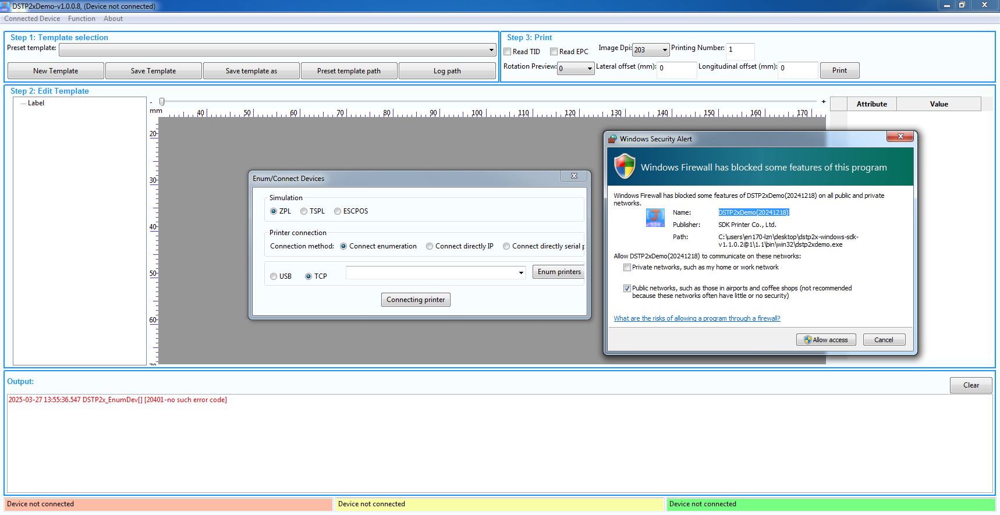
① Please check if the printer is properly powered on.
② Please check if the network cables connecting the printer to the computer and the switch/router (used for networking with the computer) are loose.
③ Please print a self - test page to determine if the printer and the computer are on the same network segment.
④ Please check if the computer can ping the printer.
⑤ As shown in the figure above, when the Demo performs a TCP printer enumeration on the computer for the first time, a firewall pop - up window may block the program from accessing the network. You need to allow the application that requests to use the network to access the port for the first time.
Linux：
① Please check if the computer can ping the printer.
② Turn off the firewall for domestic systems. The relevant commands are:
iptables -I INPUT -p udp -j ACCEPT
iptables -I OUTPUT -p udp -j ACCEPT
3、Failed to Connect to the Serial Printer
① Please check if the baud rate of the software is consistent with that of the printer. If you are not sure about the printer's baud rate, you can check it by printing a self - test page or connecting the printer with the Smart Assistant.
② If you are using a USB - to - serial adapter board or cable for connection, please ensure that the USB - to - serial driver is correctly installed before performing the serial port connection operation.
4、How to Distinguish Multiple Printers When Printing Various Labels
If multiple printers are connected via USB, if they are of different models, the manufacturers and models enumerated will be different.
If they are of the same model, you can enable the USBID through the [Smart Assistant]. At this time, the enumerated information will include the corresponding machine number information, which is unique. Therefore, you can distinguish them by the machine number.
When multiple printers are connected via the network port, you can distinguish them according to the set printing IP.
5、Whether the Development Package Has Log Information and Its Storage Directory
The specific log storage path needs to be checked through the 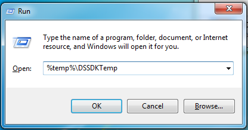

Default Path in Windows Environment:
C:\Users\AppData\Local\Temp\DSSDKTemp\ThermalLog；
You can also press the Win + R keys, enter the “%temp%” command, and then press Enter. Find the DSSDKTemp folder, and the logs of this SDK's operation records are stored inside.
Default Path in Linux Environment:
In non - ROOT mode, the logs are generated in /home/xxx/DSSDKTemp/. In ROOT mode, the logs are generated in /root/DSSDKTemp/.
The log path and level can be set and modified through the “sdkcfg.xml” file in the dependent library directory.
6、Incomplete Printing / Printed Results Do Not Match the Expected Size
① Please check if the paper is placed correctly in the printer and if it is fixed properly with the paper - pressing block after loading.
② Please check the current page length value through the self - test page to ensure that the printer has correctly performed label positioning.
③ Please check if the DPI set in the program is the same as the current DPI of the printer. If the set DPI is larger than the actual DPI of the machine, after conversion, the entire print data will be enlarged, which may exceed the label specifications and result in incomplete printing. For example, for DL - 218 (203dpi), if the interface is set to 300dpi, 10mm in the code data will actually become 15mm when printed, and the printed size will be larger than expected. You should set it correctly according to the actual DPI of the printer (such as 203dpi).
④ Please check if the print data content or coordinates exceed the size of the label. The page length and width settings in the template and interface parameters should be based on the actual label specifications.
7、Coordinate Issues in Printing Results
① Abscissa problem
Check if the paper placement in the machine is offset.
Before checking the print data, check if the page length and width are set by calling the interface. Due to differences in machines, there may be differences in the starting position of coordinate calculation. Therefore, you need to set the page length and width according to the actual printing requirements.
② Ordinate problem
Check if the label has been calibrated for positioning. You can print a self - test page to see if the positioned page length is the same as the actual label (a ±2mm range is normal). The methods for printing a self - test page are as follows:
[DP Portable Series]:
Long - press the paper - feed key while the printer is on, and wait for the self - test page to be printed.
[DL Desktop Series]:
Turn off the printer, press the paper - feed key while turning it on, and release your hand when you hear a beep to print the self - test page. For machines with a panel, you can enter the test mode menu -> perform self - test print operation to print the self - test page.
If you are using black - mark paper for positioning, you need to change the sensor to reflection mode before positioning. If you are using label gaps for positioning, change the sensor to transmission mode. For transmission mode, both the upper and lower sensors need to be aligned, and you need to move them to the position facing the label gap before positioning. If the mode is incorrect, it will affect the ordinate position of the printed result.
When batch - printing, if the previous print job is not completed and the next one is sent, it will cause the position to be offset. It is recommended to obtain the status before sending in the printing process (the current version of the printer returns the print status result by default in a synchronous manner). Only when the status is normal should the next piece of data be sent for printing.
8、Printer Operates but No Content Is Printed
① Please check if the correct paper type is being used. If ordinary paper is used, a ribbon needs to be installed (DP series printers generally only support thermal paper).
② Please check if the paper is installed upside down. (You can scratch the surface of the thermal paper with your fingernail. If there is an obvious scratch, it is the printing side.)
③ Check if the print content coordinates exceed the label range. For example, if the actual label size is 40*30mm and the abscissa of the printed text content is set to 40mm, then the content is outside the canvas.
④ For batch printing with data loss, missing data, or garbled characters, first restart the printer to clear the printer data. Do not send too much data at once or send multiple pieces of data too quickly. It is recommended that in the batch - printing process, before sending each piece of data, poll to obtain the status. Only when the status is normal (paper available, online, device not busy, buffer empty, and no other error messages), send the next piece of data for printing.
9、Print Data Sent Successfully but the Printer Does Not Respond
① Check if the printer's emulation mode is the same as the sent emulation.
② Check if the printer is in an abnormal state.
Press the paper - feed key to see if the printer can normally feed a label. If the machine is stuck and does not respond, restart the machine and try again.
Check the printer panel or indicator lights to see if it is in an error - reporting state (machines with a panel will directly display error messages, and machines without a panel will have a red - light indicator). If printing is not possible due to an error, cancel the error state or restart the machine and then operate again.
10、Issues Related to Paper Cutting
① When the paper cannot be cut: Check if the printer supports the cutter module and if the cutter function is enabled (the cutter function can be enabled or modified using the Smart Assistant).
② When the printer supports the cutter module and the cutter function is enabled, when there is no cache in the printer after printing, it will automatically cut one piece of paper.
③ Using the interface's immediate paper - cutting function: When the printer supports the cutter module and the cutter function is enabled, calling the DSTP2x_CutPaper or web_DSTP2x_CutPaper interface function will control the cutter to cut the paper immediately. This is generally used to freely control paper - cutting after printing multiple pieces of data.
Note: Some models may not be applicable to the relevant interface commands.
11、After Sending Data, the Printer Panel Displays "rfid not epc" or the Indicator Light Reports an Error
【Error Meaning】：
The printer currently has the RFID function enabled, but it doesn't detect any RFID data to be processed when executing the print data.
【Diagnostic Steps and Countermeasures】：
If the current application scenario does not require the RFID function, please turn off the RFID function through the printer panel or the "Smart Assistant". Otherwise, before calling DSTP2x_PrintXXX, call DSTP2x_LcRfid_SetData first to ensure that RFID data has been sent to the printer firmware. When the printer has the RFID function enabled but only print data is sent without writing the EPC, it's because the printer only receives the print data and lacks the EPC data.
If you do not need to print RFID tags, you can use the intelligent assistant to turn off the RFID function or use the intelligent assistant to turn off the "RFID data monitoring" option parameter (this RFID data monitoring parameter must be supported by the firmware version). If you need to print RFID, you must first dynamically write EPC data before printing;
12、Error "42074112" Returned When Printing a PDF
【Error Code Meaning】：
The corresponding plug - in was not found.
【Countermeasures】：
Check if the path of the PDF plug - in is configured correctly in the dependent sdkcfg.xml file.
Currently, we support two forms of PDF printing. The internal logic for processing PDF is set to “0” in the sdkcfg.xml file and requires an authorization file. If a PDF plug - in is needed, the plug - in path needs to be configured first.

13、Error "42074113" Returned When Printing a PDF
【Error Code Meaning】：
The program attempted to use the PDF printing function but could not find the corresponding plug - in.
【Countermeasures】：
Check if the path of the PDF plug - in is configured correctly in the dependent sdkcfg.xml file. You need to adjust it according to the actual storage path of the xpdf file.

14、Error "25182210" Returned When Printing
【Error Code Meaning】：
uUSB data sending failed.
【Countermeasures】：
① First, check if the communication between the computer and the printer is normal (check if the computer correctly identifies the printer, if the USB cable is disconnected, if the computer shuts down or restarts midway, etc.).
② If other software occupies the port for data sending and receiving, it will cause the call to time out and the data sending to fail.
③ If all the above steps have been checked, you can restart the printer and then verify the operation.
④ If the problem still occurs consistently or frequently after restarting the printer, you can troubleshoot it step by step as follows:
► Replace the USB cable and then verify.
► Replace the computer and then verify.
15、Error "25182213" Returned When Printing
【Error Code Meaning】：
No response data was received via USB.
【Diagnostic Steps and Countermeasures】：
① First, check if the USB cable is loose. If so, reconnect it firmly.
② First, check if the printer is normally recognized by the computer, as shown in the following figure.
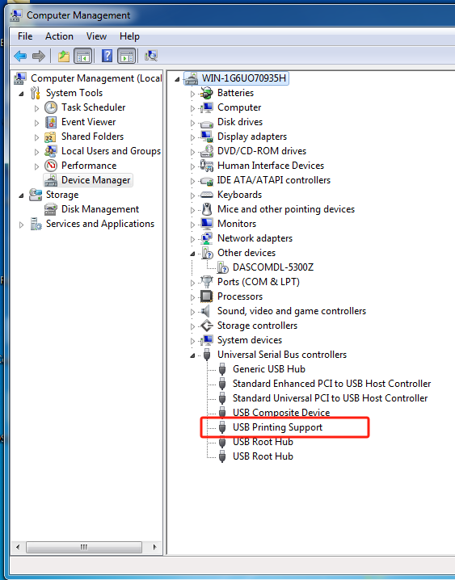
③ Check if the program calls RFID - related reading functions for an RFID printer with the RFID function not enabled. If so, first enable the RFID function of the printer, and then restart the printer and verify.
④ Observe if the printer has any action by pressing the printer's buttons to determine if the printer is currently stuck.
⑤ Check if the printer is currently reporting an error. If so, first clear the current error, and then check if the communication is normal when operating again.
⑥ Check if the printer firmware and the SDK are compatible. This diagnostic strategy is applicable to the following situations:
► When using the SDK to develop a project for the first time to connect with the printer.
► When the printer firmware or SDK version has been recently upgraded.
If an error is returned when reading EPC/user/TID:
① Print a self - test page to check if the printer is a regular printer, a high - frequency printer, or an RFID ultra - high - frequency printer. If it is an RFID ultra - high - frequency printer, check if the RFID function is not enabled.
② Before testing the RFID tag with software, check if the RFID tag has not been calibrated for positioning (make sure the tag positioning calibration is successful: after successful calibration, press the paper - feed key to feed one label, and when printing a self - test page, you can see that the calibrated label page length is the actual label page length. An error of about ±1mm in the label page length after positioning is normal).
③ Check if the read - write power or frequency band settings are incorrect. You can use the Smart Assistant to modify the frequency band and then re - position and test the RFID tag.
④ Observe if the paper - feeding action is abnormal. Check if there is paper jamming, slipping, or the ribbon sticking to the label, etc., which may prevent the RFID tag chip from reaching the printer's read - write chip position.
⑤ Check if the tag is damaged or if any special operations have been performed on it, such as tag destruction.
16、Error "25198597" Returned When Printing
【Error Code Meaning】：
TCP data sending failed.
【Countermeasures】：
① Please check if the printer is properly powered on.
② Please check if the network cables connecting the printer to the computer and the switch/router (used for networking with the computer) are loose.
③ Please check if the computer can ping the printer.
④ Use the command telnet PrinterIp 9100 (PrinterIp is the printer's IP address) to check if the printer's port 9100 is currently reachable.
17、Error "25198604" Returned When Printing
【Error Code Meaning】：
No response data was received from the printer via TCP.
【Countermeasures】：
① Please check if the printer is properly powered on.
② Please check if the network cables connecting the printer to the computer and the switch/router (used for networking with the computer) are loose.
③ Please check if the computer can ping the printer.
④ Use the command telnet PrinterIp 9100 (PrinterIp is the printer's IP address) to check if the printer's port 9100 is currently reachable.
⑤ Check if the printer firmware and the SDK are compatible. This diagnostic strategy is applicable to the following situations:
► When using the SDK to develop a project for the first time to connect with the printer.
► When the printer firmware or SDK version has been recently upgraded.
18、Error "42270720" Returned When Printing
【Error Code Meaning】：
The status data returned by the printer to the SDK indicates that the printer is currently in an error state.
【Countermeasures】：
Check whether the printer is in an error state by looking at the printer panel or the indicator light status. (For printers with a panel, error messages will be displayed; for printers without a panel, the indicator light will turn red.) Secondly, for printers with a panel, also check whether the printer is on a non - print - ready interface. If printing is not possible due to an error or other reasons, you can first cancel the error state or directly restart the machine. Continue the operation after the machine returns to a normal state.
19、Error "41992207" Returned When Loading the Dynamic Library
【Error Code Meaning】：
A program with dependent libraries is already running, which means there is currently a program based on libDSThermal.dll or libDSThermal.so running. The error occurs when you try to start another program.
【Countermeasures】：
In principle, only one application should exclusively use the printer at a time. Check through the Task Manager if programs such as DSTP2xDemo.exe, DSTP2xWebPrtServer.exe, DSTP2xDemo.out, DSTP2xWebPrtServer.out, or programs developed by the customer based on libDSThermal.dll or libDSThermal.so are running. Then, the customer should decide which program to keep running.
20、 Customer Programs or Demos Fail to Run
① If error prompts similar to those in the following two figures appear, it indicates that the customer program or the demo lacks the SDK's dependent libraries. Please copy all the files in the corresponding 32-bit or 64-bit directory under \lib to the same-level directory of the current program.
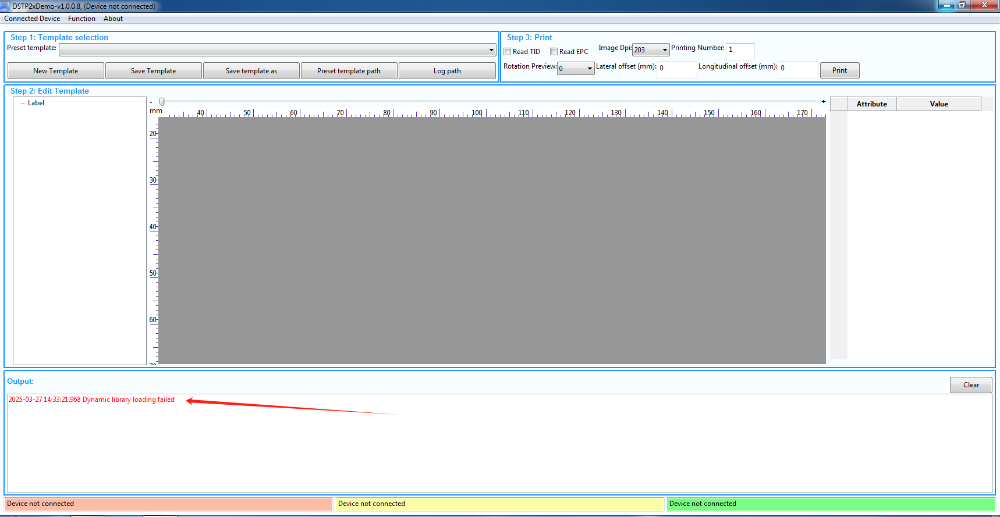
② If the message "The application was unable to start correctly (0xc000007b). Please click 'OK' to close the application" pops up, it indicates that the client program or demo is using dependent libraries with a different bit - count. For example, the client program or demo is a 32 - bit program, but it depends on a 64 - bit library. Please ensure that the 32 - bit program correctly uses the 32 - bit dependent libraries (path: \lib\Win32), and the 64 - bit program correctly uses the 64 - bit dependent libraries (path: \lib\x64).
③ If the message "This program cannot be started because VCRUNTIME140.dll is missing from your computer. Try reinstalling the program to fix this problem" pops up, please install the corresponding bit-version of vc_redist according to the bit requirement of the client program or the demo.
21、DSTP2xWebPrtServer. exe error "Failed to start service"
Check if the 9001 required port bound to the DSTP2xWebPrtServer service is occupied by other programs. Enter the netstat command on the terminal to check the port occupancy status,
The window system can be viewed using the command: netstat - ano | findstr "LISTENING"
If port 9001 is already occupied, it will be displayed as shown in the following figure:

Linux systems can be viewed using the command: sudo netstat - tulnp
If port 9001 is already occupied, it will be displayed as shown in the following figure:

【Countermeasures】：
To modify the DSTP2xWebPrtServer service port, the steps are as follows:
① Open the \web_Server\ServerCfg.ini file and modify the port number;

② Save files;
③ Run again /DSTP2xWebPrtServer.out
Note: After modifying the port of the ServerCfg.ini file, if you want to run a JavaScript sample test, remember to also modify the port number in common.exe in the sample folder to ensure consistency between the two before connecting properly.

22、Recommendations for Setting Communication Timeout
For the communication timeout of the functional interfaces in this SDK, it is recommended that the timeout values for both data sending and receiving be set between 3000 and 5000 milliseconds.
23、Selection of Corresponding Architectures in the Linux System
Currently, the system supports x86 and ARM architectures. Since the underlying logic differs among different architectures, you need to select the appropriate .so files for the corresponding architecture system for integration.
Method for checking the system architecture:
On the desktop of the Linux system, right - click to open the terminal, and enter "lscpu" to confirm the CPU architecture. The specific return information is shown in the following figure:
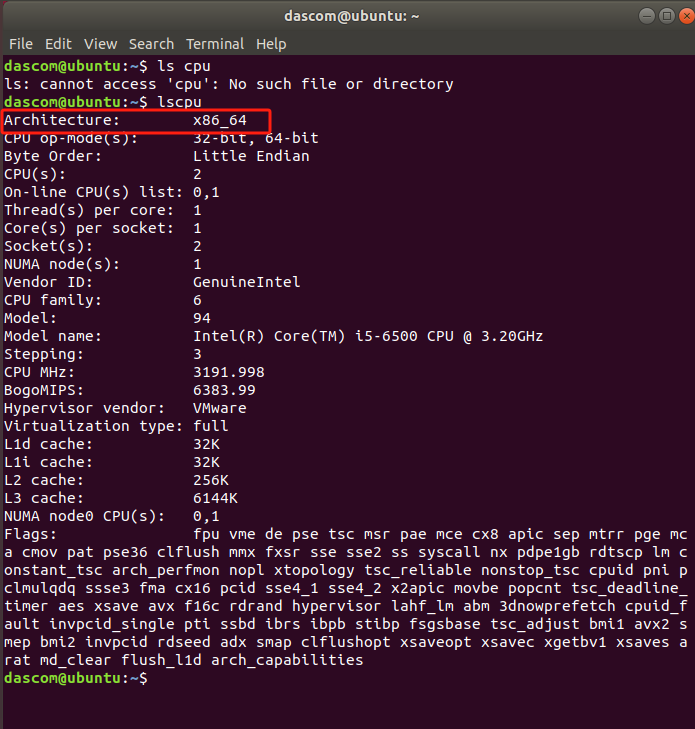
24、Querying System Information in the Linux System
在During the debugging process, if you encounter issues such as being unable to call the .so library or getting error messages, you can check the specific system information for analysis.
Commonly used query commands are as follows:
uname -a
cat /proc/version
cat /etc/os-release
cat /etc/redhat-release
cat /etc/issue
lsb_release -a
可Enter the above commands in the console at once and press Enter to execute. The returned results are shown in the following figures:


25、In the Linux system, you need to run the SDK - based program as the root user or with root privileges to control the printer connected via USB.
The SDK package provides a map.ds solution. You only need to execute this solution successfully as the root user or with root privileges once. After that, you can run the SDK - based program with normal user privileges to control the printer connected via USB.
26、Printing text errors in the Linux system
Interface calls rely on the system font library. However, each Linux system vendor customizes its own fonts, and fonts also involve copyright issues. If there are no fonts available, an error will occur. You can install the corresponding fonts or use the system - built - in fonts for printing.
In the Linux system, when you pass in the installed fonts, an error occurs and printing cannot be performed:
Due to system differences, you need to check the system fonts to see whether the font names at the top of the list are in Chinese or English. If the top - ranked font has an English name, you should pass the English name as a parameter when calling web_DSTP2x_LcDraw_SetTextFontName or DSTP2x_LcDraw_SetTextFontName. If it's a Chinese name, then pass the Chinese name.
As shown in the example in the following figure, on the left is the CentOS 7 system, where "SimSun" is ranked first, so you need to pass "SimSun". On the right is the KylinOS system, where "宋体" (Song typeface) is ranked first, so you need to pass "宋体".

Query command for fonts:
In the terminal, enter:fc-list
Just check the installed Chinese fonts:fc-list :lang=zh
27、Font operation process under the Linux system
①Right - click anywhere on the desktop to open the terminal. Enter sudo chmod 777 -R /usr/share/fonts/truetype ("/usr/share/fonts/truetype" is the name of the directory that needs permission assignment. The path may vary depending on the system. You should determine it according to the actual system. In the system shown in the following figure, the directory is located at /usr/share/fonts/truetype). Then press Enter and enter your password (if you are already logged in as the root user, you don't need to enter the password) to modify the permissions of this directory. (The permission level of 777 -R can be adjusted according to the actual situation.)
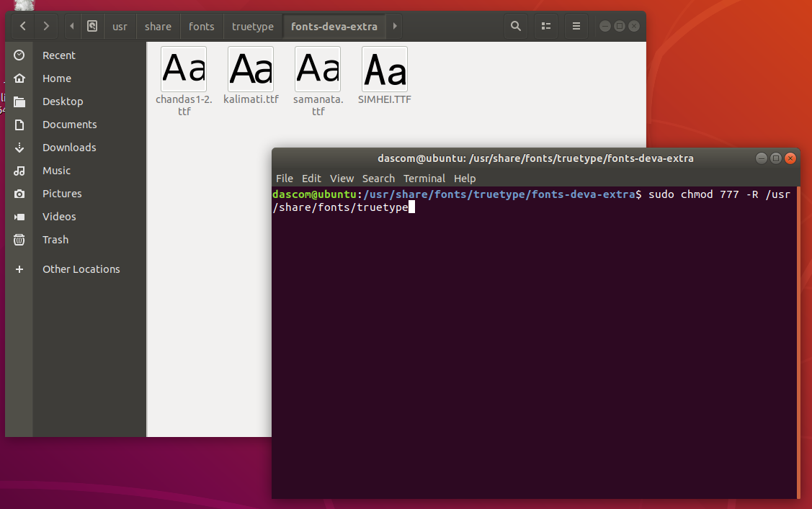
②Copy the fonts to the directory /usr/share/fonts/truetype ("/usr/share/fonts/truetype" is the location where you install the fonts. The path may vary depending on different systems. Please determine it according to the actual system. In the system shown in the following figure, the directory location is /usr/share/fonts/kingsoft).
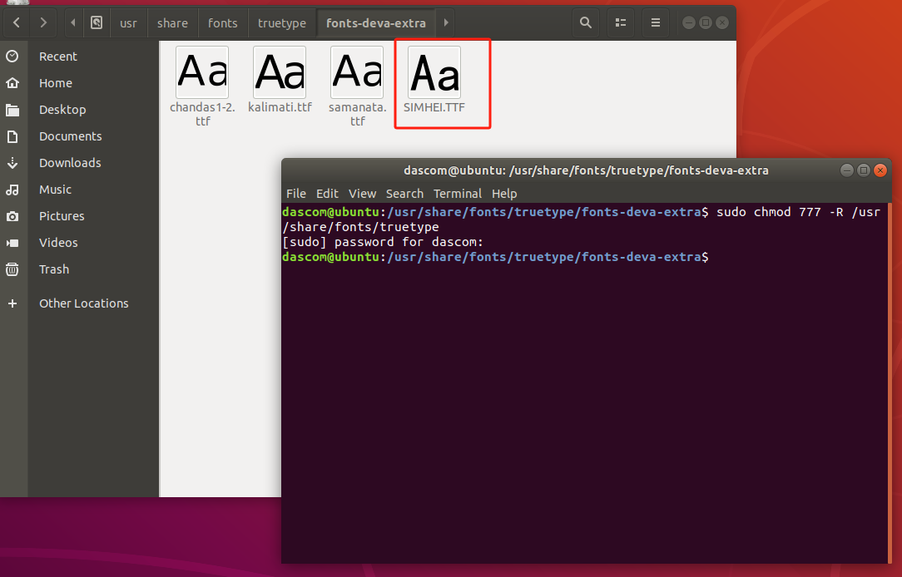
③Right-click to open the terminal in the directory /usr/share/fonts/truetype ("/usr/share/fonts/truetype" is the location where your fonts are installed. The paths vary depending on different systems. You should determine it according to the actual system. In the system shown in the following figure, the directory location is /usr/share/fonts/kingsoft).
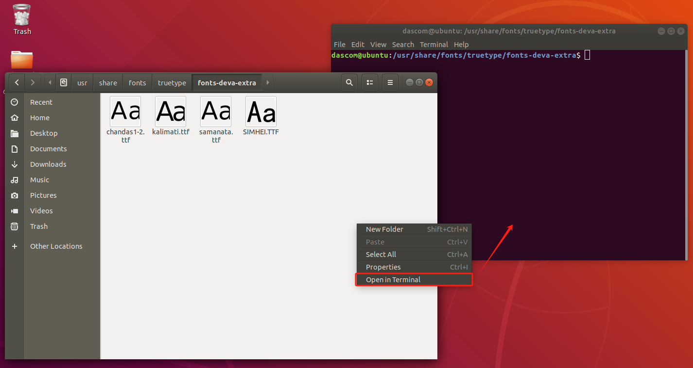
④In the terminal, enter fc-cache and press Enter. Then wait for the fonts to be installed.
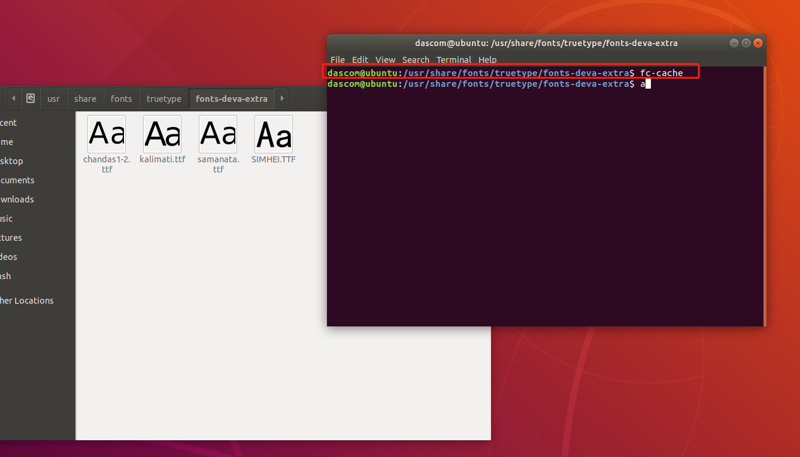
⑤In the terminal, enter fc-list and press Enter to check and confirm whether the fonts are installed successfully.
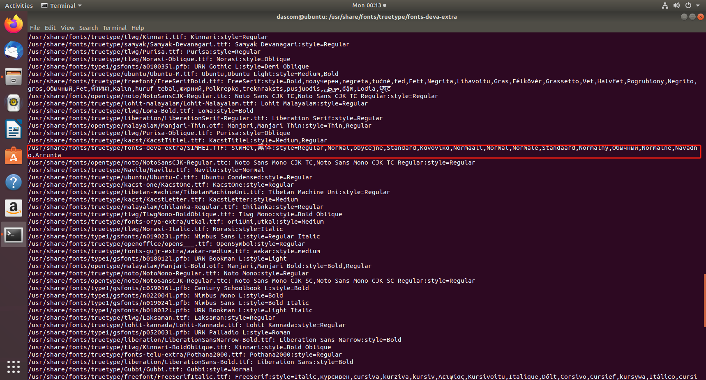
28、EPC or USER data writing format
The SDK interface supports writing in both HexStr and ASCII formats. The specific details are as follows:
【ASCII type】
① Data is written with one character as one byte.
② he length of the input data must be an integer multiple of two characters.
③ Any character data from the ASCII code table is supported as input.
Example：
Input data：1234abcd
The (hexadecimal) data actually written into the label:31 32 33 34 61 62 63 64
【HexStr type】
① It is to write the data with every two characters as one byte.
② The length of the input data must be an integer multiple of 4 characters.
③ Only numbers from 0 to 9 and letters from a to f or A to F are supported as the input.
Example：
Input data：1234abcd
The (hexadecimal) data actually written into the label：12 34 ab cd
【notes】
① Since the data written to the label is in hexadecimal format, after the upper - layer application reads the label data, it needs to decide whether to perform corresponding format conversion based on the previously selected data writing format.
② The length of EPC/user cannot exceed the chip specification. For example, if the EPC area specification of the tag chip is 96 bits, then EPC can only write 96/8=12 bytes, and if it exceeds the length, it cannot be written in; HexStr can write 24 numbers; ASCII can only write 12 numbers.
③ For special labels, the data should be written in the format required by the corresponding label specification.
29、The returned values of reading EPC, USER, and TID are “Error!”
【Error Meaning】：The data "45 72 72 6F 72 21" returned by the printer is actually the hexadecimal representation of "Error!". It indicates that the reading of the EPC, USER, or TID has failed.
【Diagnostic Steps and Countermeasures】：
① Please perform the RFID tag positioning calibration again and then try again.
② Please retry the reading operation of this tag to see if it can be successful; if the result returned by the printer is still "Error!", please try the next step.
③ If there is a PDA, please use the PDA to see if it can successfully read the EPC, USER, or TID of this tag; if the result returned by the printer is still "Error!", the current tag may be damaged/destroyed, please try the next step.
④ Please use the paper feeding function to skip the current tag, and try to read the next tag to see if it is successful. If the reading of the new tag is normal, check whether the tag is damaged or there are other issues (such as whether the tag has been destroyed or other operations have been carried out on it).
⑤ If you have already followed the above steps and the printer still returns "Error!", please restart the printer and then perform the reading operation.
30、When printing an RFID tag, the words "void" or "cancelled" will be printed.
【Error Meaning】：
For RFID printing operations with EPC/USER data, when the printer fails to write the EPC/USER data into the tag chip during the printing process, the printer will print the word "void" on the current tag. Then, it will move on to the next tag for reprinting. If the reprinting fails three times in a row, the printer will report an error and stop working.
【Diagnostic Steps and Countermeasures】：
① Please check whether the tag is damaged.
② Please check whether the RFID tag positioning calibration has been carried out for the tag. (After operations such as changing to tags of different specifications, updating and upgrading the firmware, or restoring the printer to its factory settings, the RFID tag positioning calibration operation needs to be carried out again.)
③ Please check whether the write operation to the USER area is performed on a tag without a USER area.
④ Please check whether the EPC/USER data is too long. You can refer to the tag specification to see how much data the tag supports. If it exceeds the tag specification, the printing will be voided because the data cannot be written in.
⑤ Please check whether the length of the EPC/USER data to be written is legal. The length of ASCII type data must be an integer multiple of 2 characters, and the length of HexStr type data must be an integer multiple of 4 characters.
⑥ When using a common tag for printing, it is impossible to read from or write to the RFID area of the tag.
⑦ The tag protocol is not compatible with the machine module (for example, the frequency band of the tag does not match, or a high-frequency protocol tag is used on an ultra-high-frequency machine).
⑧ For special tags, operations need to be carried out in accordance with the requirements of the corresponding tag specification. Check whether the tag password is customized, and whether the writing rules for the length of the tag EPC/USER data are different.
31、Precautions for Locking Tags
① The locking/unlocking operation must be called and executed before printing.
② If the password has been modified, the new password needs to be used when writing EPC and USER data subsequently. Otherwise, the printer will print "void" due to the inability to write and perform reprinting.
32、Cross-origin issues in browsers such as Microsoft Edge, UC Browser, QQ Browser, Microsoft Edge (again, mentioned twice in your list in different contexts perhaps), Google Chrome, and Cheetah Browser
【cause of the error】：
Currently, the server service already supports cross-origin requests initiated by browsers. However, if a cross-origin error is returned on Google Chrome, it is because starting from version 98 of Google Chrome, before a website sends a request to a private service, the browser will automatically send a "preflight request". If the service does not recognize the preflight request, it will not return a response correctly, and the browser will block all requests for which the preflight request fails. At the same time, a cross-origin error will be reported.
【Handling Measures】：
因Since it is the browser that has intercepted the request of the data packet, this cross-origin problem lies in the browser itself. For the new version of Google Chrome, you need to enter in the browser's address bar: chrome://flags/#block-insecure-private-network-requests, and then press Enter to access it.
Search for "Block insecure private network requests", set it to "Disabled", and then restart the browser to run, which can solve the problem.
33、Shortcuts for editing templates in the Linux system
Due to system differences, there will be differences in shortcut key operations during use. As shown in the following figure, the Kylin system under the x86 architecture does not support moving templates with the Alt key, nor does it support selecting table elements with Shift+Alt.
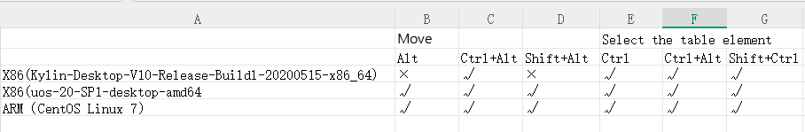
34、Precautions for Editing Template Tables
①Similarly, it is not allowed to perform the operation of merging cells between the cells within a table and non-table elements. For instance, if you select text and try to merge it with a cell, the error prompt shown in the following picture will appear:
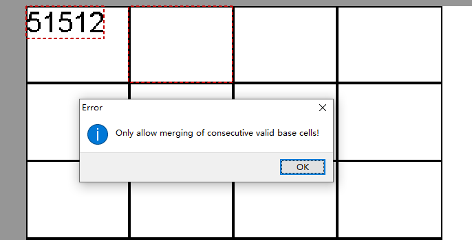
②Within the same table, adjacent basic cells are not allowed to be merged. For example, cell 0-0 can be merged with cell 0-1 and cell 1-0, but it cannot be merged with cell 0-2 or cell 0-3. When you click to merge, the error prompt shown in the following picture will appear:
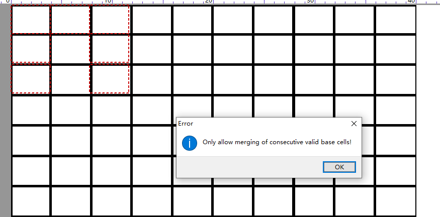
③Within the same table, non-adjacent basic cells are not allowed to be merged. For example, if you want to merge cell 0-0 with cell 1-1 and click to merge, the error prompt shown in the following picture will appear:
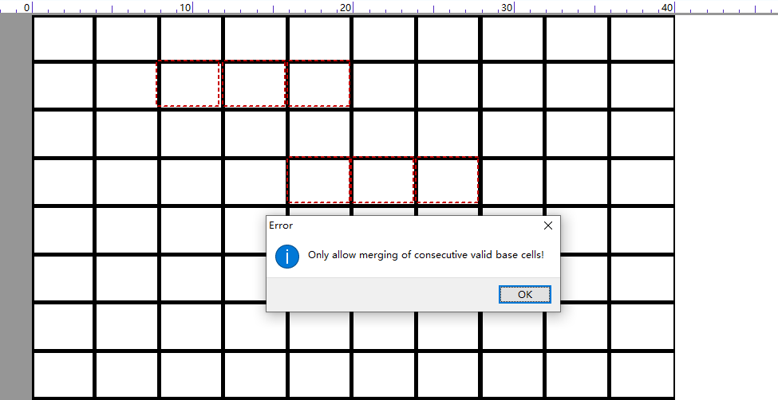
④Basic cells from two different tables are not allowed to be merged. For example, if you want to merge cell 0-0 of table-01 with cell 0-1 of table-02 and click to merge, the error prompt shown in the following picture will appear:
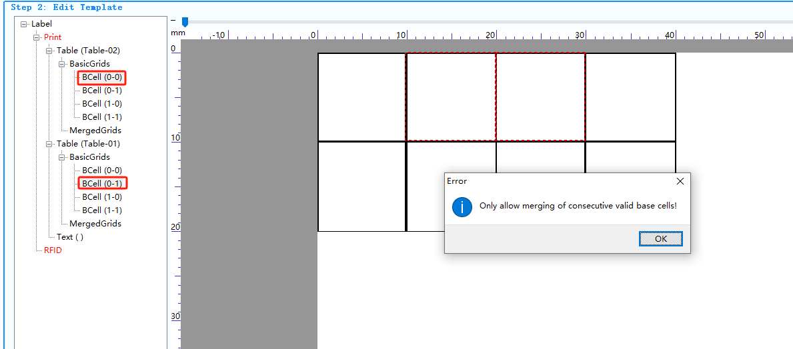
35、USB data capture in a Linux environment
Linux：
usbmon The methods for capturing the data communicated on the USB bus are as follows:
1.Check whether the kernel supports the debugfs file system
cat /proc/filesystems | grep debugfs
nodev debugfs
2.Mount the debugfs file system
sudo mount -t debugfs none_debugs /sys/kernel/debug
none_debugs already mounted or /sys/kernel/debug busy
3.Confirm whether the kernel supports the usbmon module
sudo ls /sys/module/usbmon
Cannot access '/sys/module/usbmon': No such file or directory
4.Install the usbmon module
sudo modprobe usbmon
Check again sudo ls /sys/module/usbmon
coresize holders initsize initstate notes refcnt sections srcversion taint uevent
5.Check the current bus number
sudo ls /sys/kernel/debug/usb/usbmon
0s 0u 1s 1t 1u 2s 2t 2u
6.Check the current USB device information
sudo cat /sys/kernel/debug/usb/devices
T: Bus=01 Lev=00 Prnt=00 Port=00 Cnt=00 Dev#= 1 Spd=480 MxCh= 6
B: Alloc= 0/800 us ( 0%), #Int= 0, #Iso= 0
D: Ver= 2.00 Cls=09(hub ) Sub=00 Prot=00 MxPS=64 #Cfgs= 1
P: Vendor=1d6b ProdID=0002 Rev= 5.04
S: Manufacturer=Linux 5.4.18-27-generic ehci_hcd
S: Product=EHCI Host Controller
S: SerialNumber=0000:02:03.0
C:* #Ifs= 1 Cfg#= 1 Atr=e0 MxPwr= 0mA
I:* If#= 0 Alt= 0 #EPs= 1 Cls=09(hub ) Sub=00 Prot=00 Driver=hub
E: Ad=81(I) Atr=03(Int.) MxPS= 4 Ivl=256ms
T: Bus=02 Lev=00 Prnt=00 Port=00 Cnt=00 Dev#= 1 Spd=12 MxCh= 2
B: Alloc= 17/900 us ( 2%), #Int= 1, #Iso= 0
D: Ver= 1.10 Cls=09(hub ) Sub=00 Prot=00 MxPS=64 #Cfgs= 1
P: Vendor=1d6b ProdID=0001 Rev= 5.04
S: Manufacturer=Linux 5.4.18-27-generic uhci_hcd
S: Product=UHCI Host Controller
S: SerialNumber=0000:02:00.0
C:* #Ifs= 1 Cfg#= 1 Atr=e0 MxPwr= 0mA
I:* If#= 0 Alt= 0 #EPs= 1 Cls=09(hub ) Sub=00 Prot=00 Driver=hub
E: Ad=81(I) Atr=03(Int.) MxPS= 2 Ivl=255ms
T: Bus=02 Lev=01 Prnt=01 Port=00 Cnt=01 Dev#= 2 Spd=12 MxCh= 0
D: Ver= 1.10 Cls=00(>ifc ) Sub=00 Prot=00 MxPS= 8 #Cfgs= 1
P: Vendor=0e0f ProdID=0003 Rev= 1.03
S: Manufacturer=VMware
S: Product=VMware Virtual USB Mouse
C:* #Ifs= 1 Cfg#= 1 Atr=c0 MxPwr= 0mA
I:* If#= 0 Alt= 0 #EPs= 1 Cls=03(HID ) Sub=01 Prot=02 Driver=usbhid
E: Ad=81(I) Atr=03(Int.) MxPS= 8 Ivl=1ms
T: Bus=02 Lev=01 Prnt=01 Port=01 Cnt=02 Dev#= 3 Spd=12 MxCh= 7
D: Ver= 1.10 Cls=09(hub ) Sub=00 Prot=00 MxPS= 8 #Cfgs= 1
P: Vendor=0e0f ProdID=0002 Rev= 1.00
S: Manufacturer=VMware, Inc.
S: Product=VMware Virtual USB Hub
C:* #Ifs= 1 Cfg#= 1 Atr=e0 MxPwr= 0mA
I:* If#= 0 Alt= 0 #EPs= 1 Cls=09(hub ) Sub=00 Prot=00 Driver=hub
E: Ad=81(I) Atr=03(Int.) MxPS= 1 Ivl=255ms
Or
lsusb
Bus 001 Device 001: ID 1d6b:0002 Linux Foundation 2.0 root hub
Bus 002 Device 003: ID 0e0f:0002 VMware, Inc. Virtual USB Hub
Bus 002 Device 002: ID 0e0f:0003 VMware, Inc. Virtual Mouse
Bus 002 Device 001: ID 1d6b:0001 Linux Foundation 1.1 root hub
Among them, the number following "Bus" is the bus number, and the number following "Dev#" or "Device" is the device number
7.Start monitoring (device 001 on bus 1)
sudo cat /sys/kernel/debug/usb/usbmon/1u |grep "1:001" > ./1.mon.txt
36、When calling with Java, it returns "Not a UTF - 8 string".
【Cause of the error】：
There are Chinese characters in the printed parameters whose encoding is not UTF - 8
【Countermeasures】：
Add the System.setProperty() method to set system properties, as shown in the following figure: